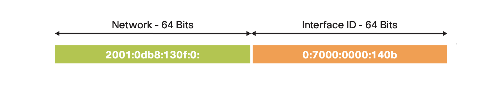

IPv6动态地址分配机制详解
IPv6支持多个地址，地址分配更加灵活方便。与 IPv4 仅仅依赖 DHCP 协议的地址分配方法不同，IPv6 加入了原生的无状态地址自动配置 (Sateless Address Autoconfiguration，简写 SLAAC) 协议。SLAAC 既可以单独工作为主机提供 IPv6 地址，又能与 DHCPv6 协同运作产生新的分配方案。这里对 IPv6 动态地址分配机制做一个全面分析。
IPv6 地址概述
地址构成
IPv6 与 IPv4 最显著的不同，就是其超大的地址空间。IPv4 有32比特 (4字节)，允许大约42.9亿（232）个地址。而 IPv6 定义了128比特 (16字节)，支持大约340 x 1036个地址。这是一个相当可观的数字，在可预见的未来都不会出现地址枯竭的问题。典型的 IPv6 地址可被划分成两部分。如下图所示，开头的64比特用来代表网络，后面的64比特用作接口标识：接口标识可以有多种方式产生：
- 静态手工设置
- 链路层地址 (MAC) 转化为64比特 EUI-64
- 由 DHCPv6 指定
- 由隐私扩展或加密协议生成
为了便于书写，IPv6 推荐末端加上网络前缀长度的压缩格式标记，据此上面的地址可以缩短表示为： 2001:db8:130f::7000:0:140b/64
地址类型
RFC 4291 区分了三种 IPv6 地址类型：
- 单播 (unicast)：网络地址和网络节点一一对应，点对点连接
- 任播 (anycast)：发送地址对应一群接收节点，但只有最近一个接收到
- 组播 (multicast)：发送地址对应一群接收可以复制信息的节点
留意到 IPv6 取消了广播 (broadcast) 地址类型，对应的 IPv4 广播功能可以更好地由组播实现。任播地址与单播并无不同，应用场景非常有限。任播的一个典型应用是设定 DNS 根服务器，以便让主机就近查询域名。对于单播和组播地址，它们之间可由不同的网络前缀所辨认：
| 地址类型 | 英文名称 | 二进制 | 16进制 | 应用 |
|---|---|---|---|---|
| 链路本地地址（单播） | Link-local address | 1111 1110 10 | fe80::/10 | 单链路通信 |
| 唯一本地地址（单播） | Unique local address | 1111 1101 | fd00::/8 | 本地网络通信 |
| 全局单播地址 | Global unicast address | 001 | 2000::/3 | 互联网通信 |
| 组播地址 | Multicast address | 1111 1111 | ff00::/8 | 群组通信，流媒体视频 |
主机的每个接口都必须有一个链路本地地址，此外接口还可以以手工或动态自动配置方式获得唯一本地地址和全局单播地址。这样 IPv6 接口很自然地就拥有多个单播地址。唯一本地地址由本地网管管理，全局单播地址则需要 IANA 指定的地区注册中心负责分配。参考下图，当前所有的全局单播地址都从2000::/3地址块里分配，地址前面48比特标识服务提供商的全局路由网络，之后的16比特标识企业或校园内部子网：  因为 IPv6 组播地址只能用作目的地址，所以其比特位定义与单播不同。参见 RFC 4291，组播地址包含4比特特征标志位、4比特应用范围标志及最后112比特群组标识：
因为 IPv6 组播地址只能用作目的地址，所以其比特位定义与单播不同。参见 RFC 4291，组播地址包含4比特特征标志位、4比特应用范围标志及最后112比特群组标识：  另外同一协议还规定了一些预留的 IPv6 组播地址，其中最重要的有：
另外同一协议还规定了一些预留的 IPv6 组播地址，其中最重要的有：
- 本地网段所有节点 — ff02::1
- 本地网段所有路由器 — ff02::2
- 本地请求节点地址: ff02::1:ffxx:xxxx
动态分配方案
NDP 协议
IPv6 动态地址分配依赖于邻居发现协议 (Neighbor Discovery Protocol，简称NDP)。NDP作用于数据链路层，负责在链路上发现其他节点和相应的 IPv6 地址，并确定可用路由和维护其他活动节点的信息可达性。它为 IPv6 网络提供了等效于 IPv4 网络中地址解析协议 (ARP) 与 ICMP 路由器发现和重定向协议的功能。然而，NDP加入了许多改进以及新的功能。 NDP 定义了五种 ICMPv6 消息类型：
- 路由器请求 (Router Solicitation，简称 RS)
- 路由器通告 (Router Advertisement，简称 RA)
- 邻居请求 (Neighbor Solicitation)
- 邻居通告 (Neighbor Advertisement)
- 重定向 (Redirect)
这里的头二个消息类型 RS 和 RA，就是实现 IPv6 动态地址分配的关键。主机会发送 RS 消息到本地网段所有路由器组播地址 ff02::2，请求路由信息。当路由器收到网络节点发出的 RS 时，会即时发送 RA 回应。RA 的消息格式如下：
1 | 0 1 2 3 |
它定义了两个特殊比特位 M 和 O，其意义如下：
- M — 受监管的地址配置标志，设为1时地址从 DHCPv6 获取。
- O — 其他配置标志，设为1时指示其他配置信息从 DHCPv6 获取
RA 消息的最后是选项部分 (Options)，最初有源链路层地址、MTU 和前缀信息三个选项。后来，RFC 8106 (取代 RFC 6106) 又加上了递归域名服务器 (RDNSS) 和域名服务搜索列表 (DNSSL) 两个选项。这其中前缀信息选项直接决定了主机接口的动态地址配置，它的格式如下：
1 | 0 1 2 3 |
这里前缀长度 (Prefix Length) 和前缀 (Prefix) 联合决定了 IPv6 地址的网络前缀。此外，前缀信息选项也定义了两个特殊比特位 L 和 A：
- L — “在链路” (on-link) 标志，设为1时指示前缀可用于“在链路”判定
- A — 自动地址配置标志，设为1时指示前缀可用于 SLAAC
类似于 IPv4 的子网掩码功能，“在链路”判定的意义在于让主机确定某个接口可以接入哪些网络。缺省情况下，主机只将链路本地地址所在的网络视为“在链路”。如果无法判定一个目的地址的“在链路”状态，主机默认将 IPv6 数据报转发给默认网关（或缺省路由器）。当主机收到 RA 消息时，如果一个前缀信息选项的“在链路”标志设为1，并且有效使用期限 (Valid Lifetime) 也是非0值，那么主机就会在前缀列表中为之创建一个新的前缀网络条目。所有未过期的前缀网络条目都是“在链路”的。
消息时序
了解了 NDP 协议及 RA 消息所传递的信息之后，来看看它们是如何引导网络节点实现动态地址分配的。
网络中的路由器会周期性的发送 RA 消息到本地网段所有节点组播地址 (ff02::1)。但是，为了避免时延，主机启动完成后会马上发送一个或多个 RS 消息到本地网段所有路由器。协议规定路由器要在0.5秒内回应 RA 消息。之后，根据所收到的 RA 消息中的 M/O/A 比特位的取值，主机会决定如何动态配置接口的唯一本地地址和全局单播地址，以及如何获取其他配置信息。在某些比特位取值组合下，主机需要运行 DHCPv6 客户端软件，连接到服务器以获取地址分配和/或其他配置信息。整个过程如以下消息时序图所示：
sequenceDiagram participant R as 路由器 participant H as 主机 participant S as DHCPv6 服务器 Note over R,H: 路由器请求 rect rgb(239, 252, 202) H->>R: Router Solitication R-->>H: Router Advertisement end Note over H,S: 地址请求 rect rgb(230, 250, 255) H->>S: DHCPv6 Solicit S-->>H: DHCPv6 Advertise H->>S: DHCPv6 Request S-->>H: DHCPv6 Reply end Note over H,S: 其他信息请求 rect rgb(230, 250, 255) H->>S: DHCPv6 Information-request S-->>H: DHCPv6 Reply end
注意： 与 IPv4 DHCP 协议不同，DHCPv6 客户端使用 UDP 端口546，服务器使用 UDP 端口547。
以下详细解释由 M/O/A 比特位的取值组合所确定的三种动态分配方案：
- SLAAC
- SLAAC + 无状态 DHCPv6
- 有状态 DHCPv6
SLAAC
SLAAC是最简单的 IPv6 地址自动分配方案，不需要任何服务器。其工作原理是主机启动后发送 RS 消息请求，路由器回送 RA 消息至本地网段所有节点。如果 RA 消息包含如下设置：
- 首部的 M 比特和 O 比特都清零
- 前缀信息选项的 L 比特和 A 比特置为1
那么主机收到这个 RA 消息后，执行如下操作实现 SLAAC：
- 组合网络前缀与本地接口标识，生成唯一本地地址或全局单播地址
- 安装默认网关（或缺省路由）指向路由器地址 (RA消息的源地址)
- 将此接口设为对应网络前缀的“在链路”，也是以上默认网关的下一跳接口
- 如果包含 RDNSS 和/或 DNSSL 选项，安装域名服务器和域名后缀
这样，主机就获得了一个或多个 IPv6 唯一本地地址或全局单播地址，以及默认网关和域名服务信息，可以完成各种互联网连接。
下面是思科 Catalyst 9300 多层接入交换机上的 SLAAC 配置示例：
1 | ipv6 unicast-routing |
思科多层交换机的第三层接口提供路由功能。可以看到，当在 VLAN 10 的第三层接口激活 IPv6 之后，其默认的地址自动分配方案就是 SLAAC。从该接口发出的 RA 消息的控制比特位全部按照 SLAAC 方案设置，其配置的每个 IPv6 地址的网络前缀都会被自动加入到 RA 前缀信息选项列表中。当然，网络管理员也可以用单独的接口配置命令排除某些网络前缀。示例的最后两行配置命令指定了 RDNSS 和 DNSSL，它们也被加入到 RA 消息选项中。
这时如果主机接入 VLAN 10 的端口，就会马上获得一个网络前缀为 2001:ABCD:1000::/64 全局单播地址，同时其默认网关的地址被设定为 2001:ABCD:1000::1。打开浏览器输入一个网址，它就会向指定的域名服务器 2001:4860:4860::8888（谷歌的公共域名服务器地址）发出域名解析请求，以获取目的网址的 IPv6 地址建立连接。
SLAAC + 无状态 DHCPv6
SLAAC 自动地址分配快捷方便，为中小型网络部署提供了即插即用的 IPv6 部署方案。但是如果网络节点需要获得其他一些配置信息，比如 NTP/SNTP 服务器、TFTP 服务器和 SIP 服务器地址，或者其功能依赖某些厂商特定的信息选项 (Vendor-specific Information Option) 时，就必须选择 SLAAC + 无状态 DHCPv6 的方案。
这一方案依然使用 SLAAC 自动地址分配，但是路由器会指示主机去连接 DHCPv6 服务器以获取其他配置信息。这时路由器回送的 RA 消息设置变为：
- 首部的 M 比特清零，O 比特置为1
- 前缀信息选项的 L 比特和 A 比特置为1
主机收到这个 RA 消息后，执行如下操作：
- 组合网络前缀与本地接口标识，生成唯一本地地址或全局单播地址
- 安装默认网关（或缺省路由）指向路由器地址 (RA消息的源地址)
- 将此接口设为对应网络前缀的“在链路”，也是以上默认网关的下一跳接口
- 如果包含 RDNSS 和/或 DNSSL 选项，安装域名服务器和域名后缀
- 启动 DHCPv6 客户端，连接 DHCPv6 服务器请求其他配置信息
- 保存 DHCPv6 服务器回复的其他配置信息
可以看到，SLAAC + 无状态 DHCPv6 在地址分配上与 SLAAC 并没有什么不同。DHCPv6 只是提供附加配置信息，不会分配 IPv6 地址。所以 DHCPv6 服务器不会追踪网络节点的地址分配状况，这就是“无状态”的含义。
相应的 Catalyst 9300 交换机上的配置命令如下：
1 | ipv6 unicast-routing |
与 SLAAC 的例子不同点在于，VLAN 10 接口配置命令ipv6 nd other-config-flag明确指定置位 RA 消息的 O 比特。其下一条命令ipv6 dhcp server vlan-10-clients激活接口的 DHCPv6 服务器响应功能，对应服务器的共用资源名称为vlan-10-clients。DHCPv6 服务器的配置在接口配置的上方，从ipv6 dhcp pool vlan-10-clients处开始，包含了 DNS 服务器地址、DNS 域名和 SNTP 服务器地址。
如果使用交换机之外的位于其他网段的 DHCPv6 服务器，可以删除ipv6 dhcp server命令，启用示例中下一行的ipv6 dhcp relay destination命令指定转发 DHCPv6 请求至外部服务器的地址。
有状态 DHCPv6
许多大型企业应用 DHCP 管理设备的 IPv4 地址，所以部署 DHCPv6 集中分配和管理 IPv6 地址是自然的优先选择。这就是有状态 DHCPv6的用武之地。这一方案同样需要路由器发送的 RA 消息，但是不会仅仅依靠网络前缀进行自动地址分配。RA 消息的控制比特位设置是：
- 首部的 M 比特置为1，O 比特无所谓
- 前缀信息选项的 L/A 比特可按需要设为1或0
收到这个 RA 消息后，主机执行操作如下：
- 如果有前缀信息选项 A 比特设为1，则组合生成唯一本地地址或全局单播地址
- 安装默认网关（或缺省路由）指向路由器地址 (RA消息的源地址)
- 如果有前缀信息选项 L 比特设为1，将此接口设为对应网络前缀的“在链路”
- 如果包含 RDNSS 和/或 DNSSL 选项，安装域名服务器和域名后缀
- 启动 DHCPv6 客户端，连接服务器请求地址和其他配置信息
- 将 DHCPv6 服务器分配的地址设置到此接口
- 保存 DHCPv6 服务器回复的其他配置信息
Catalyst 9300 交换机上的有状态 DHCPv6 配置命令示例如下：
1 | ipv6 unicast-routing |
与 SLAAC + 无状态 DHCPv6 相比，这里接口配置去掉了ipv6 nd other-config-flag，改用ipv6 nd managed-config-flag命令。这对应于将 RA 消息首部的 M 比特置为1。DHCPv6 服务器的配置加入了两条address prefix命令设置网络前缀。同时接口配置的ipv6 nd prefix 2001:ABCD:1:1::/64 no-advertise指定路由器不包含 2001:ABCD:1:1::/64 前缀信息选项到 RA 中。所以，这个例子主机接口不会生成 SLAAC 地址，只会产生来自 DHPCv6 的两个地址：一个是网络前缀为 FD09:9:5:90::/64 的唯一本地地址，另一个是网络前缀为 2001:9:5:90::/64 的全局单播地址。这两个地址的接口标识也分别由 DHPCv6 指定。
如何分辨主机接口动态分配的地址来源？方法很简单。要记住的一点是，DHPCv6 不会发送网络前缀长度给请求者，所以从 DHPCv6 拿到的地址的网络前缀长度都是128。而 SLAAC 生成的地址网络前缀长度不会是128的。请看下面 Linux 主机上 wired0 接口实例：
1 | ifconfig wired0 |
我们马上可以判定，该接口使用的是有状态 DHCPv6 地址分配，但也用收到的相同的网络前缀2001:20::/64生成了 SLAAC 地址：
- 2001:20::53c7:1364:a4d8:fd91/128 — DHCPv6 地址，接口标识为随机数
- 2001:20::a2ec:f9ff:fe6c:d930/64 — SLAAC 地址，接口标识为 MAC EUI-64 格式
- fe80::a2ec:f9ff:fe6c:d930/64 — 链路本地地址，接口标识为 MAC EUI-64 格式
注意：DHPCv6 服务器也不提供任何 IPv6 默认网关信息，主机需要从 RA 消息获知动态默认网关。
总结比较
下表列出了 RA 消息的控制比特组合与地址分配和其他配置获取方式的关系：
| M-比特 | O-比特 | A-比特 | 主机地址 | 其他配置 |
|---|---|---|---|---|
| 0 | 0 | 0 | 静态设置 | 手工配置 |
| 0 | 0 | 1 | 前缀由 RA 指定，自动生成 | 手工配置 |
| 0 | 1 | 0 | 静态设置 | DHCPv6 |
| 0 | 1 | 1 | 前缀由 RA 指定，自动生成 | DHCPv6 |
| 1 | 0 | 0 | 有状态 DHCPv6 | DHCPv6 |
| 1 | 0 | 1 | 有状态 DHCPv6 和/或 自动生成 | DHCPv6 |
| 1 | 1 | 0 | 有状态 DHCPv6 | DHCPv6 |
| 1 | 1 | 1 | 有状态 DHCPv6 和/或 自动生成 | DHCPv6 |
总结三种动态分配方案:
| 分配方案 | 特点 | 适用场景 |
|---|---|---|
| SLAAC | 简单实用，快速部署 | 中小企业、消费类产品联网、物联网 (IoT) |
| SLAAC + 无状态 DHCPv6 | 自动配置，扩展服务 | 中小企业需要附加网络服务 |
| 有状态 DHCPv6 | 集中管理和控制 | 大型企业、事业单位和校园网 |
注意：由于 IPv6 网络接口可以有多个地址（一个链路本地地址，加上一个或多个唯一本地地址和/或全局单播地址），在建立外部连接时，如何选择源地址变得非常重要。RFC 6724 给出了详细的 IPv6 源地址选择规则。在嵌入式系统的开发中，与同一远端设备连接的控制平面和数据平面常常由不同的功能组件实现。比如控制平面直接调用 Linux 用户空间套接字建立连接，连接使用的 IPv6 源地址由 TCP/IP 协议栈选定，而数据平面直接在内核空间实现数据封装处理和传输。这时要及时将控制平面所选择的 IPv6 源地址同步到数据平面，否则用户数据无法送达同一目的地。
排错指南
在思科路由器和交换机上通用的 IPv6 动态地址分配调试和排错命令如下表所示：
| 命令行 | 用途 |
|---|---|
show ipv6 interface brief |
显示全部接口 IPv6 地址信息简表 |
show ipv6 interface [type] [num] |
显示单个接口 IPv6 和 NDP 配置和状态信息 |
show ipv6 interface [type] [num] prefix |
显示单个接口 IPv6 网络前缀信息 |
show ipv6 dhcp pool |
显示 DHCPv6 共用资源配置信息 |
show ipv6 dhcp binding |
显示 DHCPv6 服务器保存的 IPv6 与主机绑定信息 |
show ipv6 dhcp interface [type] [num] |
显示单个接口 DHCPv6 配置和状态信息 |
debug ipv6 nd |
调试 IPv6 NDP 协议 |
debug ipv6 dhcp |
调试 DHCPv6 服务器 |
下面这个控制终端 NDP 协议调试记录显示路由器收到来自主机 FE80::5850:6D61:1FB:EF3A 的 RS 消息，回应 RA 消息到本网络全部节点组播地址 FF02::1：
1 | Router# debug ipv6 nd |
而下一段记录显示输入debug ipv6 dhcp调试命令之后，观察到的无状态 DHCPv6 的例子。主机 FE80::5850:6D61:1FB:EF3A 向 DHCPv6 服务器发出信息请求 (INFORMATION-REQUEST) 消息，服务器选择源地址 FE80::C801:B9FF:FEF0:8 发出回应消息：
1 | Router#debug ipv6 dhcp |
以下是一段有状态 DHCPv6 的调试记录，第1、15、16和26行显示两次消息交换 (SOLICIT/ADVERTISE，REQUEST/REPLY) 的完整过程：
1 | IPv6 DHCP: Received SOLICIT from FE80::5850:6D61:1FB:EF3A on FastEthernet0/0 |
对于难以厘清是主机、路由器还是 DHCPv6 服务器问题的复杂情况，推荐使用免费开源网络数据包分析软件 Wireshark 截取整个流程的数据包作分析。在用 Wireshark 分析数据包时，可以应用关键词过滤功能：
| 过滤关键词 | 只显示 |
|---|---|
| icmpv6.type=133 | ICMPv6 RS |
| icmpv6.nd.ra.flag | ICMPv6 RA |
| dhcpv6 | DHCPv6 数据包 |
我们可以直接在主机端运行 Wireshark，也可以在网络侧用交换机提供的交换端口分析器 (Switched Port Analyzer，简写 SPAN) 将指定端口数据包集中重定向到运行 Wireshark 的监控端口截取。思科 Catalyst 9300 系列交换机还直接集成了 Wireshark 软件，能够在线截取和分析过滤数据包，使用起来十分方便。
这里提供三种分配方案的样例数据包文件供下载学习： slaac.pcap，stateless-dhcpv6.pcap，stateful-dhcpv6.pcap
参考资料
IPv6 产品认证测试
精准而实效的 IPv6 产品测试是确保 IPv6 基础架构高互操作性、安全性和可靠性部署的关键。 IPv6 Ready 标识是 IPv6 论坛 创立的 IPv6 测试和认证项目。它的目标是定义 IPv6 的一致性和互操作测试规范、提供自测试工具集、建立全球IPv6测试中心并提供产品验证服务，以及最后颁发认证证书。
2020年5月 IPv6 Ready 标识项目发布新的5.0版测试规范：
- IPv6 核心协议一致性测试规范（Conformance）
- IPv6 核心协议互操作测试规范（Interoperability）
伴随着这两个新的测试序列，项目组还申明了两个永久变化：
- 测试在纯 IPv6 环境下完成，不会提供任何 IPv4 网络环境
- 被测设备必须在缺省态激活系统及所有接口的 IPv6 功能
不出意外地，在新的5.0版测试规范中有专门的章节定义 SLAAC 测试用例，以验证这一 IPv6 核心协议。
IPv6 核心协议 RFC 列表
粗体显示的部分由 IPv6 Ready 5.0版核心协议测试规范直接覆盖：
- RFC 4191 Default Router Preferences and More-Specific Routes
- RFC 4193 Unique Local IPv6 Unicast Addresses
- RFC 4291 IP Version 6 Addressing Architecture
- RFC 4443 Internet Control Message Protocol (ICMPv6) for the Internet Protocol Version 6 (IPv6) Specification
- RFC 4861 Neighbor Discovery for IP version 6 (IPv6)
- RFC 4862 IPv6 Stateless Address Autoconfiguration
- RFC 4941 Privacy Extensions for Stateless Address Autoconfiguration in IPv6
- RFC 5095 Deprecation of Type 0 Routing Headers in IPv6
- RFC 6724 Default Address Selection for Internet Protocol Version 6 (IPv6)
- RFC 6980 Security Implications of IPv6 Fragmentation with IPv6 Neighbor Discovery
- RFC 7217 A Method for Generating Semantically Opaque Interface Identifiers with IPv6 Stateless Address Autoconfiguration (SLAAC)
- RFC 8064 Recommendation on Stable IPv6 Interface Identifiers
- RFC 8106 IPv6 Router Advertisement Options for DNS Configuration
- RFC 8200 Internet Protocol, Version 6 (IPv6) Specification
- RFC 8201 Path MTU Discovery for IP version 6
- RFC 8415 Dynamic Host Configuration Protocol for IPv6 (DHCPv6)